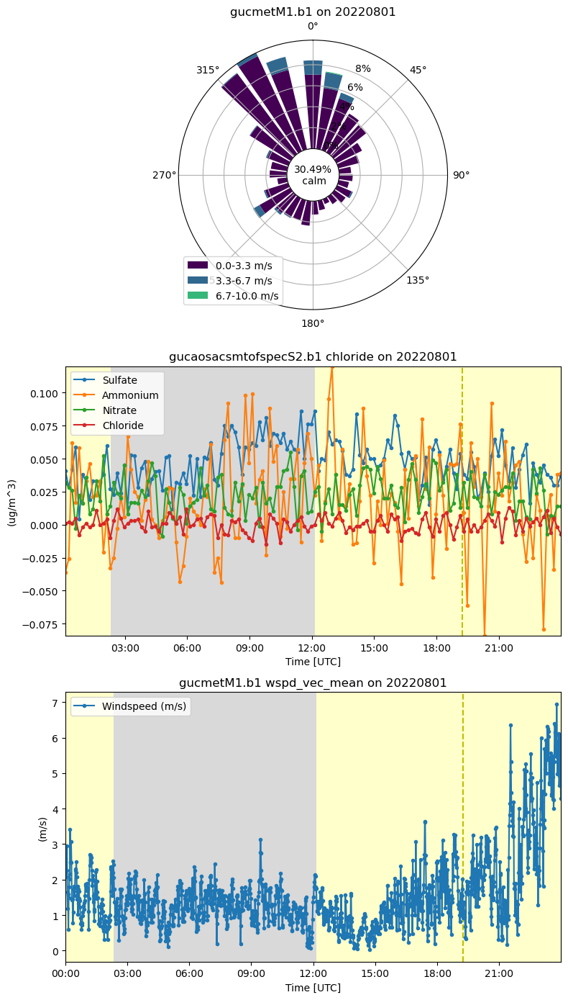

Plot Aerosol and Meteorological Data from SAIL
Contents

Plot Aerosol and Meteorological Data from SAIL#
Overview#
Within this notebook, we will cover:
How to access aerosol and meteorological data using ACT
How to plot the data using ACT
Prerequisites#
Concepts |
Importance |
Notes |
|---|---|---|
Helpful |
Basic plotting |
|
Helpful |
Data access and working with ARM data |
Time to learn: 30 minutes
Imports#
import act
import matplotlib.pyplot as plt
import numpy as np
Search and Access the Data Using the ARMLive API#
Access Aerosol Data#
username = 'armlive_training'
token = '6413343e8c6a6ade'
startdate = '20220801'
datastream = 'gucaosacsmtofspecS2.b1'
files = act.discovery.download_data(username, token, datastream, startdate, startdate)
aeorosol_ds = act.io.read_netcdf(files)
[DOWNLOADING] gucaosacsmtofspecS2.b1.20220801.000742.nc
Access Meteorological Data#
datastream = 'gucmetM1.b1'
files = act.discovery.download_data(username, token, datastream, startdate, startdate)
met_ds = act.io.read_netcdf(files)
[DOWNLOADING] gucmetM1.b1.20220801.000000.cdf
Plot our Display with a Wind Rose and Timeseries#
WindDisplay = act.plotting.WindRoseDisplay(met_ds, figsize=(8, 14), subplot_shape=(3,))
WindDisplay.plot(
'wdir_vec_mean', 'wspd_vec_mean', spd_bins=np.linspace(0, 10, 4),
num_dirs=30, tick_interval=2, subplot_index=(0,))
TimeAosDisplay = act.plotting.TimeSeriesDisplay(aeorosol_ds)
WindDisplay.put_display_in_subplot(TimeAosDisplay, subplot_index=(1,))
TimeAosDisplay.plot('sulfate', label='Sulfate')
TimeAosDisplay.plot('ammonium', label='Ammonium')
TimeAosDisplay.plot('nitrate', label='Nitrate')
TimeAosDisplay.plot('chloride', label='Chloride')
TimeAosDisplay.day_night_background()
TimeMetDisplay = act.plotting.TimeSeriesDisplay(met_ds)
WindDisplay.put_display_in_subplot(TimeMetDisplay, subplot_index=(2,))
TimeMetDisplay.plot('wspd_vec_mean', label='Windspeed (m/s)')
TimeMetDisplay.day_night_background()
plt.tight_layout()
